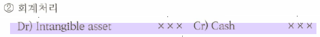

Intangible Assets
Intangible assets
- intended for use
- no physical substance
- more than 1 year useful life → amortization
ex) goodwill, patent, computer software → future economic benefit
purchased externally → 원칙적으로 자산요건 충족 시 인정
generated internally → expense, 요건 충족시 자산 인정 (exception)
- ex) legal fee → patent
Rights, privileges, and competitive advantages that result from the ownership of long-lived assets that do not possess physical substance (used in operations)
Types
patents, copyrights, trademarks and trade name, franchises and licenses, goodwill
determining the cost of intangible assets
purchased externally - cost (only purchase price) ⇒ the initial cost is the cash or cash equivalent price paid to acquire the intangible assets.

외부취득시 취득원가를 capitalized 한 후 정해진 내용연수 동안 amortization한다.
Generated internally
expensed when incurred
내부적으로 지출한 금액은 원칙적으로 무형자산으로 인식하지 않고 비용처리한다. but, legal and registration fee incurred to obtain an intangible asset should be capitalized.
Any costs incurred in developing, maintaining, restoring an intangible assets are expensed when incurred.
Start-up costs
회사를 설립하기 위한 창업비 (include organization costs) 등은 예외없이 발생 즉시 비용처리한다.
- legal fees
- new facility에 대한 opening 비용
- 새로운 product or service에 대한 소개비용 등
amortization
intangible asset’s asset allocated to expense over its estimated useful life through the process of amortization.
Limited life- 유형자산과 동일하게 the asset’s useful life 동안 amortizationindefinite useful life - no amortization→ tested annually for impairment


Amortization method - reflect the pattern in which the economic benefits of intangible asset are consumed. Usually amortized on a straight-line basis unless the company can show that another method is preferred.
Amortization period = Min(Useful life, legal life)
Types
Goodwill
The value of all favorable attributes that relate to a company - superior management, desired location, good customer relations, skilled employees etc.
\[ Goodwill = \text{purchase price} - \text{the FV of net assets acquired} \]
외부에서 취득한 영업권만 자산인식하고 내부창출 영업권은 자산인식하지 않는다. 또한 취득이후 영업권을 developing, maintaining, restoring하기 위하여 지출하는 금액은 모두 비용으로 인식한다.
Goodwill can be identified only with the business as a whole. ↔︎ 투자자산이나 유형자산은 시장에서 개별적으로 거래된다.
goodwill은 주관적인 측정을 피하기 위해서 record only when an entire business is purchased.
Goodwill은 내용연수를 한정할 수 없기 때문에 not amortized → annually tested for impairment.
patent
Exclusive rights that gives the holder to use, manufacture, and sell a product or process for a period of 20 years without interference or infringement by others.
valuation - when purchased
- Purchase price represents its cost → debited to Patents
valuation - when internally-developed
- R&D costs related to the development of the product, process, or idea that is subsequently patented must be expensed as incurred.
legal suit
- legal fees and other costs incurred in
successfully defending a patent suit are debited to Patents. - Legal fees of an
unsuccessful defense is expensedin the period in which an unfavorable court decision is rendered.
Amortization - Min(legal life, useful life)
Patent 회계처리
- purchased externally - capitalize → amortization
- developed internally
- incurred
- R&D → expense
- registration
- registration fee를 capitalization → 사용하면서 amortization
- lawsuit
- successful defence - legal fee를 capitalization하고 이후 amortization
- unsuccessful defence는 legal fees와 unamortized patent book value 모두를 expense 처리
- incurred
Research & Development costs → not intangible assets
R&D costs are expenditures that may lead to patents, copyrights, new processes, and new products.
원칙 - 연구개발의 성공여부와 무관하게 일부 예외적인 경우를 제외하고는 most R&D costs are expensed when incurred.
- 일부 예외적인 경우
- alternative future uses가 있는 경우 - 연구개발활동에 사용된 material, equipment, facilities 등은 자산인식하고 내용연수 동안 감가상각한다.
- R&D costs undertaken on behalf of others. 타인을 대신하여 연구개발비 부담하는 경우 등
예외 - 연구개발로 인하여 patent를 출원하게 되면 관련된 lawyer’s fees만 patent 금액에 포함하고 R&D costs는 모두 비용처리한다.


Disclosure
유형자산 및 무형자산의 세부내역
amortization method etc.
Analysis
The asset turnover ratio
보유중이거나 취득한 자산이 sales revenue 창출에 어느 정도 기여했는지 그 능력을 파악하는 지표
How efficiently a company uses its assets to generate sales → analyzes the productivity of a company assets
\[ \text{asset turnover ratio} = \frac{\text{net sales}}{\text{average total assets}} \]